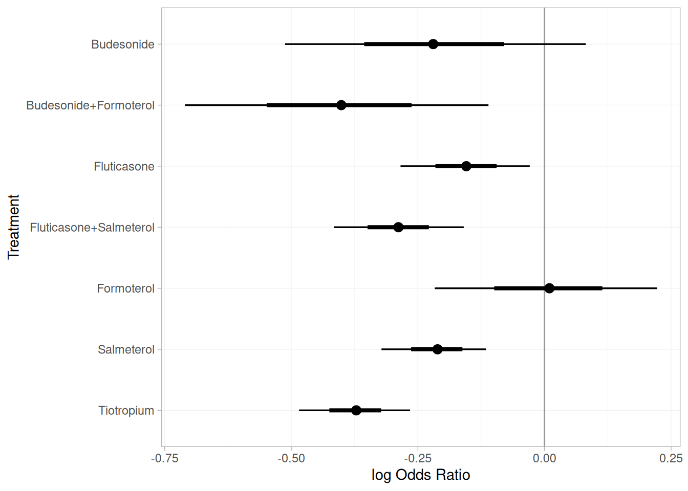

install.packages(c("multinma", "dplyr", "tibble"))Principles of Indirect Treatment Comparisons
1 Getting Started
1.1 About this Practical
This practical is designed for R, an open-source statistical programming environment widely used for data analysis and evidence synthesis. All examples can be reproduced on any computer with R (≥ 4.5.1) and the following packages installed: multinma, dplyr, and tibble.
If you are new to R:
- Download and install R from https://cran.r-project.org.
- (Optional) Install RStudio for an easier coding interface: https://posit.co/download/rstudio/.
- You can install all required packages with:
If running this practical on a shared or institutional computer, ensure these packages are available before starting. No special configuration or external data files are needed.
1.2 Introduction
This exercise helps you familiarize yourself with the principles of indirect and mixed treatment comparisons.
You’ll use a simple, real-data-inspired example involving Semaglutide, Liraglutide, and Placebo, and visualize the treatment network using the multinma package in R.
Although the data have been slightly simplified for illustration, the reported treatment effects are based on estimates published in Nature Medicine (2025)
1.3 Background
In this example, two clinical trials each compared an active treatment with Placebo. We’d like to understand how Semaglutide performs relative to Liraglutide, even though no head-to-head trial was conducted. We derived the following contrast-level data from the published trials:
| Comparison | Effect Size | Error Variance | 95% CI |
|---|---|---|---|
| Liraglutide vs Placebo | 4.53 | 0.26 | (3.56; 5.55) |
| Semaglutide vs Placebo | 10.02 | 1.78 | (7.40; 12.63) |
Each effect size represents the mean percentage difference in total body weight loss versus placebo.
These effect sizes were derived from studies summarized in the Nature Medicine paper cited above. We’ll now use them to estimate the indirect comparison between the two active drugs.
2 Hands-on Analysis
2.1 Step 1. Visualizing the Treatment Network
Let’s visualize how these two studies form a (simple) network of interventions.
library(multinma)
library(tibble)
# Contrast-level AgD with a reference row per study (y = NA on Placebo)
agd_contrast <- tribble(
~studyn, ~trtn, ~diff, ~se_diff,
"Study 1", "Placebo", NA_real_, NA_real_,
"Study 1", "Liraglutide", 4.53, sqrt(0.26),
"Study 2", "Placebo", NA_real_, NA_real_,
"Study 2", "Semaglutide", 10.02, sqrt(1.78)
)
net <- set_agd_contrast(agd_contrast,
study = studyn,
trt = trtn,
y = diff,
se = se_diff)
# Visualize
plot(net, weight_edges = TRUE, weight_nodes = FALSE)In this network plot, we can see
- Placebo is the common comparator
- Liraglutide and Semaglutide are connected through Placebo
2.2 Step 2. Estimating the Indirect Comparison
When two treatments have both been compared to a common control, we can use the consistency equation to indirectly compare them:
\(\hat{\Delta}_{A,B} = \hat{\Delta}_{A,C} - \hat{\Delta}_{B,C}\)
\(\text{Var}(\hat{\Delta}_{A,B}) = \text{Var}_{A,C} + \text{Var}_{B,C}\)
Try it yourself:
# Effect sizes and variances (based on Nature Medicine 2025 study)
lira <- list(est = 4.53, var = 0.26)
sema <- list(est = 10.02, var = 1.78)
# Indirect comparison: Semaglutide vs Liraglutide
est_indirect <- sema$est - lira$est
var_indirect <- sema$var + lira$var
se_indirect <- sqrt(var_indirect)
# 95% Confidence Interval
ci <- est_indirect + qnorm(c(0.025, 0.975)) * se_indirectYou should obtain an effect size of approximately 5.49 in favor of Semaglutide, with a 95% confidence interval of (2.69, 8.29). This means that, based on indirect evidence through placebo, Semaglutide achieves about 5.49% greater mean weight loss than Liraglutide.
We can fit the same analysis using the multinma package, which adopts a Bayesian estimation framework:
db_fit_FE <- nma(net,
trt_effects = "fixed",
link = "identity")
relative_effects(db_fit_FE, trt_ref = "Liraglutide")| Contrast | Mean | SD | 2.5% | Median | 97.5% |
|---|---|---|---|---|---|
| Placebo vs. Liraglutide | -4.53 | 0.51 | -5.55 | -4.52 | -3.55 |
| Semaglutide vs. Liraglutide | 5.32 | 1.43 | 2.61 | 5.34 | 8.04 |
2.3 Step 3. Mixed Treatment Comparisons
Now that you have seen how two studies connect through a common comparator, we can extend the idea of an indirect comparison to a mixed treatment comparison (MTC).
An MTC combines both direct and indirect evidence across a connected network of trials.
- Direct evidence comes from head-to-head trials comparing two treatments in the same study.
- Indirect evidence arises when two treatments are compared through a shared control (e.g., Placebo).
By “mixing” these sources, we obtain more precise estimates of relative effects across all treatments.
Consider we now have a third study that directly compares Semaglutide and Liraglutide:
| Comparison | Effect Size | Error Variance | 95% CI |
|---|---|---|---|
| Liraglutide vs Placebo | 4.53 | 0.26 | (3.56; 5.55) |
| Semaglutide vs Placebo | 10.02 | 1.78 | (7.40; 12.63) |
| Semaglutide vs Liraglutide | 9.40 | 1.65 | (6.88; 11.91) |
We can update our contrast-level data to include this new direct comparison:
\(\hat{\Delta}_{A,B, \text{mixed}} = \left(\frac{\hat{\Delta}_{A,B, \text{direct}}}{\text{Var}(\hat{\Delta}_{A,B, \text{direct}})} + \frac{\hat{\Delta}_{A,B, \text{indirect}}}{\text{Var}(\hat{\Delta}_{A,B, \text{indirect}})}\right) \left(\frac{1}{\text{Var}(\hat{\Delta}_{A,B, \text{direct}})} + \frac{1}{\text{Var}(\hat{\Delta}_{A,B, \text{indirect}})}\right)^{-1}\)
\(\text{Var}(\hat{\Delta}_{A,B, \text{mixed}}) = \left(\frac{1}{\text{Var}(\hat{\Delta}_{A,B, \text{direct}})} + \frac{1}{\text{Var}(\hat{\Delta}_{A,B, \text{indirect}})}\right)^{-1}\)
In R, we can derive the mixed effect as follows:
# New direct comparison data
direct_comp <- list(est = 9.40, var = 1.65)
# Mixed treatment comparison
est_mixed <- (direct_comp$est / direct_comp$var + est_indirect / var_indirect) /
(1 / direct_comp$var + 1 / var_indirect)
var_mixed <- 1 / (1 / direct_comp$var + 1 / var_indirect)
se_mixed <- sqrt(var_mixed)
# 95% Confidence Interval
ci_mixed <- est_mixed + qnorm(c(0.025, 0.975)) * se_mixedYou should obtain an effect size of approximately 7.65 in favor of Semaglutide, with a 95% confidence interval of (5.78; 9.52).
We can fit the same analysis using the multinma package:
# Updated contrast-level AgD including direct comparison
agd_contrast <- tribble(
~studyn, ~trtn, ~diff, ~se_diff,
"Study 1", "Placebo", NA_real_, NA_real_,
"Study 1", "Liraglutide", 4.53, sqrt(0.26),
"Study 2", "Placebo", NA_real_, NA_real_,
"Study 2", "Semaglutide", 10.02, sqrt(1.78),
"Study 3", "Liraglutide", NA_real_, NA_real_,
"Study 3", "Semaglutide", 9.40, sqrt(1.65)
)
net <- set_agd_contrast(agd_contrast,
study = studyn,
trt = trtn,
y = diff,
se = se_diff)db_fit_FE_mixed <- nma(net,
trt_effects = "fixed",
link = "identity")
relative_effects(db_fit_FE_mixed, trt_ref = "Liraglutide")| Contrast | Mean | SD | 2.5% | Median | 97.5% |
|---|---|---|---|---|---|
| Placebo vs. Liraglutide | -4.26 | 0.48 | -5.20 | -4.26 | -3.33 |
| Semaglutide vs. Liraglutide | 7.58 | 0.94 | 5.77 | 7.57 | 9.42 |
We can also rank the treatments included in this example according to their estimated effectiveness:
db_rankprobs <- posterior_rank_probs(db_fit_FE_mixed, lower_better = FALSE)
plot(db_rankprobs)In this figure, we can see that Semaglutide has the highest probability of being the most effective treatment for weight loss, followed by Liraglutide and Placebo. These rankings apply only to the subset of treatments analyzed in this simplified example, not to the full network of interventions reported in the Nature Medicine publication.
3 Going Further
3.1 Extending MTC to Network Meta-analysis
We can extend the principles of mixed treatment comparisons to a full network meta-analysis (NMA) by incorporating multiple treatments and studies. An NMA allows us to estimate relative effects across a connected network of interventions, even when some treatments have not been directly compared in head-to-head trials.
This example is discussed in greater detail in our upcoming book chapter, Principles of meta-analysis and indirect treatment comparisons (Debray et al. 2026). It is based on results from a systematic review of randomized controlled trials evaluating pharmacologic treatments for chronic obstructive pulmonary disease (COPD) (Baker, Baker, and Coleman 2009).
The primary outcome, occurrence of one or more episodes of COPD exacerbation, is binary (yes / no). Five monotherapies – fluticasone, budesonide, salmeterol, formoterol, and tiotropium – and two fixed combinations – fluticasone + salmeterol and budesonide + formoterol – were compared against placebo. The data are available from the R package netmeta:
# install.packages("netmeta)
library(netmeta)
data(Baker2009)| study | year | id | treatment | exac | total |
|---|---|---|---|---|---|
| Llewellyn-Jones 1996 | 1996 | 1 | Fluticasone | 0 | 8 |
| Llewellyn-Jones 1996 | 1996 | 1 | Placebo | 3 | 8 |
| Boyd 1997 | 1997 | 2 | Salmeterol | 47 | 229 |
| Boyd 1997 | 1997 | 2 | Placebo | 59 | 227 |
| Paggiaro 1998 | 1998 | 3 | Fluticasone | 45 | 142 |
| Paggiaro 1998 | 1998 | 3 | Placebo | 51 | 139 |
Note that in this example we have arm-level data rather than contrast-level data. Each row corresponds to a treatment arm within a study, including the number of participants and the number of events for that arm. In contrast, the previous examples used contrast-level data, where each row summarized the difference in outcomes between two treatments within the same study. Both data structures can be analyzed in multinma, but arm-level data (as in the Baker2009 dataset) are more common in published network meta-analyses and allow for greater modeling flexibility.
We can now visualize the treatment network:
net <- set_agd_arm(data = Baker2009,
study = study,
trt = treatment,
r = exac,
n = total)
plot(net, weight_edges = TRUE, weight_nodes = TRUE)In this network plot, we can see how the various treatments connect through multiple studies, with Placebo serving as a common comparator. We can now use the same function calls as before to fit a network meta-analysis model and estimate relative treatment effects across all interventions. However, in this example we will use a logit link function, which is more appropriate for binary outcomes, and assume random treatment effects:
fit_COPD <- nma(net,
trt_effects = "random",
link = "logit", # Use logit-link function
refresh = 0) # Suppress MCMC output
db_releff_RE <- relative_effects(fit_COPD, trt_ref = "Placebo")
plot(db_releff_RE, ref_line = 0)
Among monotherapies, tiotropium demonstrated the highest efficacy, with a pooled odds ratio of 0.69 (95% CrI: 0.62 to 0.77) versus placebo. Among combination therapies, budesonide + formoterol showed the greatest efficacy, with a pooled OR of 0.67 (95% CrI: 0.49 to 0.90).
4 Session information
─ Session info ───────────────────────────────────────────────────────────────
setting value
version R version 4.5.1 (2025-06-13)
os Ubuntu 24.04.3 LTS
system x86_64, linux-gnu
ui X11
language (EN)
collate C.UTF-8
ctype C.UTF-8
tz UTC
date 2025-10-30
pandoc 3.1.3 @ /usr/bin/ (via rmarkdown)
quarto 1.8.25 @ /usr/local/bin/quarto
─ Packages ───────────────────────────────────────────────────────────────────
package * version date (UTC) lib source
abind 1.4-8 2024-09-12 [1] CRAN (R 4.5.1)
boot 1.3-31 2024-08-28 [3] CRAN (R 4.5.1)
cachem 1.1.0 2024-05-16 [1] CRAN (R 4.5.1)
cli 3.6.5 2025-04-23 [1] CRAN (R 4.5.1)
codetools 0.2-20 2024-03-31 [3] CRAN (R 4.5.1)
colorspace 2.1-2 2025-09-22 [1] CRAN (R 4.5.1)
CompQuadForm 1.4.4 2025-07-13 [1] CRAN (R 4.5.1)
digest 0.6.37 2024-08-19 [1] CRAN (R 4.5.1)
distributional 0.5.0 2024-09-17 [1] CRAN (R 4.5.1)
dplyr * 1.1.4 2023-11-17 [1] CRAN (R 4.5.1)
evaluate 1.0.5 2025-08-27 [1] CRAN (R 4.5.1)
evd 2.3-7.1 2024-09-21 [1] CRAN (R 4.5.1)
farver 2.1.2 2024-05-13 [1] CRAN (R 4.5.1)
fastmap 1.2.0 2024-05-15 [1] CRAN (R 4.5.1)
forcats 1.0.1 2025-09-25 [1] CRAN (R 4.5.1)
generics 0.1.4 2025-05-09 [1] CRAN (R 4.5.1)
ggdist 3.3.3 2025-04-23 [1] CRAN (R 4.5.1)
ggforce 0.5.0 2025-06-18 [1] CRAN (R 4.5.1)
ggplot2 4.0.0 2025-09-11 [1] CRAN (R 4.5.1)
ggraph 2.2.2 2025-08-24 [1] CRAN (R 4.5.1)
ggrepel 0.9.6 2024-09-07 [1] CRAN (R 4.5.1)
glue 1.8.0 2024-09-30 [1] CRAN (R 4.5.1)
graphlayouts 1.2.2 2025-01-23 [1] CRAN (R 4.5.1)
gridExtra 2.3 2017-09-09 [1] CRAN (R 4.5.1)
gtable 0.3.6 2024-10-25 [1] CRAN (R 4.5.1)
hms 1.1.4 2025-10-17 [1] CRAN (R 4.5.1)
htmltools 0.5.8.1 2024-04-04 [1] CRAN (R 4.5.1)
htmlwidgets 1.6.4 2023-12-06 [1] CRAN (R 4.5.1)
igraph 2.2.1 2025-10-27 [1] CRAN (R 4.5.1)
inline 0.3.21 2025-01-09 [1] CRAN (R 4.5.1)
jsonlite 2.0.0 2025-03-27 [1] CRAN (R 4.5.1)
kableExtra * 1.4.0 2024-01-24 [1] CRAN (R 4.5.1)
knitr * 1.50 2025-03-16 [1] CRAN (R 4.5.1)
labeling 0.4.3 2023-08-29 [1] CRAN (R 4.5.1)
lattice 0.22-7 2025-04-02 [3] CRAN (R 4.5.1)
lifecycle 1.0.4 2023-11-07 [1] CRAN (R 4.5.1)
lme4 1.1-37 2025-03-26 [1] CRAN (R 4.5.1)
loo 2.8.0 2024-07-03 [1] CRAN (R 4.5.1)
magic 1.6-1 2022-11-16 [1] CRAN (R 4.5.1)
magrittr 2.0.4 2025-09-12 [1] CRAN (R 4.5.1)
MASS 7.3-65 2025-02-28 [3] CRAN (R 4.5.1)
mathjaxr 1.8-0 2025-04-30 [1] CRAN (R 4.5.1)
Matrix 1.7-3 2025-03-11 [3] CRAN (R 4.5.1)
matrixStats 1.5.0 2025-01-07 [1] CRAN (R 4.5.1)
memoise 2.0.1 2021-11-26 [1] CRAN (R 4.5.1)
meta * 8.2-1 2025-09-01 [1] CRAN (R 4.5.1)
metadat * 1.4-0 2025-02-04 [1] CRAN (R 4.5.1)
metafor 4.8-0 2025-01-28 [1] CRAN (R 4.5.1)
minqa 1.2.8 2024-08-17 [1] CRAN (R 4.5.1)
multinma * 0.8.1 2025-05-31 [1] CRAN (R 4.5.1)
mvtnorm 1.3-3 2025-01-10 [1] CRAN (R 4.5.1)
netmeta * 3.2-0 2025-04-10 [1] CRAN (R 4.5.1)
nlme 3.1-168 2025-03-31 [3] CRAN (R 4.5.1)
nloptr 2.2.1 2025-03-17 [1] CRAN (R 4.5.1)
numDeriv 2016.8-1.1 2019-06-06 [1] CRAN (R 4.5.1)
pillar 1.11.1 2025-09-17 [1] CRAN (R 4.5.1)
pkgbuild 1.4.8 2025-05-26 [1] CRAN (R 4.5.1)
pkgconfig 2.0.3 2019-09-22 [1] CRAN (R 4.5.1)
polyclip 1.10-7 2024-07-23 [1] CRAN (R 4.5.1)
purrr 1.1.0 2025-07-10 [1] CRAN (R 4.5.1)
QuickJSR 1.8.1 2025-09-20 [1] CRAN (R 4.5.1)
R6 2.6.1 2025-02-15 [1] CRAN (R 4.5.1)
rbibutils 2.3 2024-10-04 [1] CRAN (R 4.5.1)
RColorBrewer 1.1-3 2022-04-03 [1] CRAN (R 4.5.1)
Rcpp 1.1.0 2025-07-02 [1] CRAN (R 4.5.1)
RcppParallel 5.1.11-1 2025-08-27 [1] CRAN (R 4.5.1)
Rdpack 2.6.4 2025-04-09 [1] CRAN (R 4.5.1)
readr 2.1.5 2024-01-10 [1] CRAN (R 4.5.1)
reformulas 0.4.2 2025-10-28 [1] CRAN (R 4.5.1)
rlang 1.1.6 2025-04-11 [1] CRAN (R 4.5.1)
rmarkdown 2.30 2025-09-28 [1] CRAN (R 4.5.1)
rstan 2.32.7 2025-03-10 [1] CRAN (R 4.5.1)
rstantools 2.5.0 2025-09-01 [1] CRAN (R 4.5.1)
rstudioapi 0.17.1 2024-10-22 [1] CRAN (R 4.5.1)
S7 0.2.0 2024-11-07 [1] CRAN (R 4.5.1)
scales 1.4.0 2025-04-24 [1] CRAN (R 4.5.1)
sessioninfo * 1.2.3 2025-02-05 [1] any (@1.2.3)
StanHeaders 2.32.10 2024-07-15 [1] CRAN (R 4.5.1)
stringi 1.8.7 2025-03-27 [1] CRAN (R 4.5.1)
stringr 1.5.2 2025-09-08 [1] CRAN (R 4.5.1)
survival 3.8-3 2024-12-17 [3] CRAN (R 4.5.1)
svglite 2.2.2 2025-10-21 [1] CRAN (R 4.5.1)
systemfonts 1.3.1 2025-10-01 [1] CRAN (R 4.5.1)
textshaping 1.0.4 2025-10-10 [1] CRAN (R 4.5.1)
tibble * 3.3.0 2025-06-08 [1] CRAN (R 4.5.1)
tidygraph 1.3.1 2024-01-30 [1] CRAN (R 4.5.1)
tidyr 1.3.1 2024-01-24 [1] CRAN (R 4.5.1)
tidyselect 1.2.1 2024-03-11 [1] CRAN (R 4.5.1)
truncdist 1.0-2 2016-08-30 [1] CRAN (R 4.5.1)
tweenr 2.0.3 2024-02-26 [1] CRAN (R 4.5.1)
tzdb 0.5.0 2025-03-15 [1] CRAN (R 4.5.1)
vctrs 0.6.5 2023-12-01 [1] CRAN (R 4.5.1)
viridis 0.6.5 2024-01-29 [1] CRAN (R 4.5.1)
viridisLite 0.4.2 2023-05-02 [1] CRAN (R 4.5.1)
withr 3.0.2 2024-10-28 [1] CRAN (R 4.5.1)
xfun 0.53 2025-08-19 [1] CRAN (R 4.5.1)
xml2 1.4.1 2025-10-27 [1] CRAN (R 4.5.1)
yaml 2.3.10 2024-07-26 [1] CRAN (R 4.5.1)
[1] /home/runner/work/_temp/Library
[2] /opt/R/4.5.1/lib/R/site-library
[3] /opt/R/4.5.1/lib/R/library
* ── Packages attached to the search path.
──────────────────────────────────────────────────────────────────────────────References
Baker, William L., Erica L. Baker, and Craig I. Coleman. 2009. “Pharmacologic Treatments for Chronic Obstructive Pulmonary Disease: A Mixed-Treatment Comparison Meta-Analysis.” Pharmacotherapy: The Journal of Human Pharmacology and Drug Therapy 29 (8): 891–905. https://doi.org/10.1592/phco.29.8.891.
Debray, Thomas P. A., Natalie Dennis, Dimitris Mavridis, Aurélie Bardet, and Sofia Dias. 2026. “Principles of Meta-Analysis and Indirect Treatment Comparisons.” In Comparative Effectiveness and Personalized Medicine Research Using Real-World Data, edited by T. P. A. Debray, T. L. Nguyen, and R. W. Platt. Boca Raton, FL: Taylor & Francis.